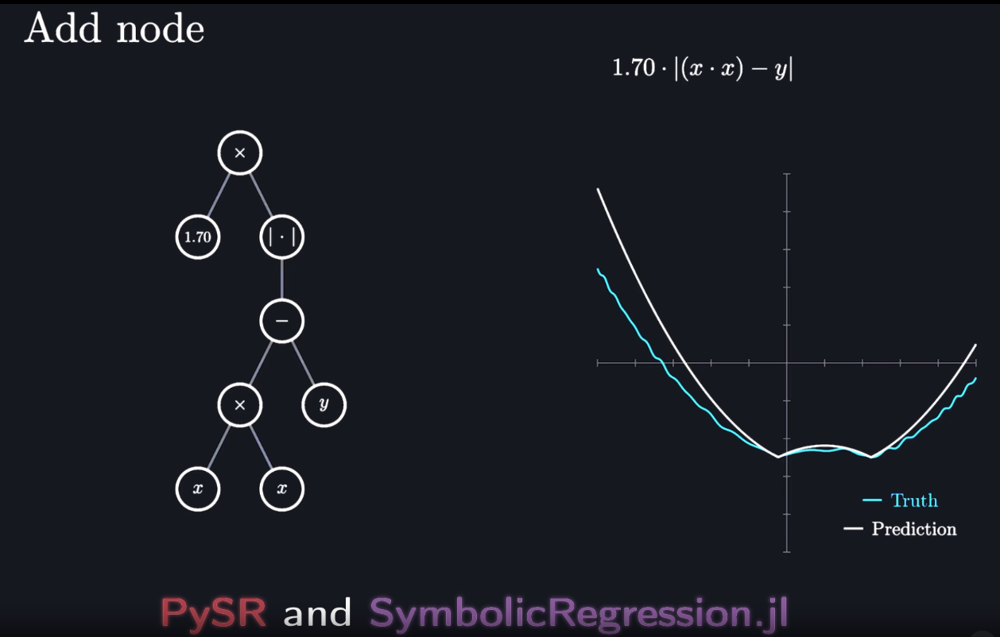

# import Pkg;
# Pkg.add(["SymbolicRegression", "MLJ", "SymbolicUtils", "Plots"])Symbolic Regression in Julia

What is it?
A linear regression finds the line that is “closest” to a dataset. In a similar maner, a symbolic regression is an algorithm that find a combination of symbols that minimizes the mean square error of a given dataset. These symbols are unary and binary operators like the + symbol or a function like \(cos\) and \(1/x\).
Example 1
Let’s try to approximate the function \(f(x) = - x^2 + 1\) using the symbols and \(+, -, *\) combined with the variable \(x\).
using SymbolicRegression, MLJ, SymbolicUtils
using Plots
x = [-3:0.1:3;]
y = @. - x^2 + 1;
scatter(x, y)First we define a model
model = SRRegressor(
binary_operators=[+, -, *],
niterations=50,
seed = 1
);(Note: the argument seed = 1 is needed to ensure that the result is the same when this Quarto document compiles; you don’t need it.)
And then fit it to our dataset
X = reshape(x, (length(x), 1))
mach = machine(model, X, y)
fit!(mach)We can see a report about the results:
r = report(mach);
r(best_idx = 2,
equations = DynamicExpressions.EquationModule.Node{Float64}[-2.1000000000093864, 1.0 - (x₁ * x₁)],
equation_strings = ["-2.1000000000093864", "1.0 - (x₁ * x₁)"],
losses = [7.681799999999998, 0.0],
complexities = [1, 5],
scores = [36.04365338911715, 9.010913347279288],)This report contains the losses
r.losses2-element Vector{Float64}:
7.681799999999998
0.0the equations
r.equations2-element Vector{DynamicExpressions.EquationModule.Node{Float64}}:
-2.1000000000093864
1.0 - (x₁ * x₁)and the best one of the functions found (ie. the one with the least loss):
node_to_symbolic(r.equations[r.best_idx], model)1.0 - (x1 * x1)Here, we can read \(x_1\) as \(x\), because we only have one variable.
Notice that this expression simplifies to our original \(f\).
Example 2
Now let’s get a more interesting example. Take \(f(x) = x^2 + 2cos(x)^2\):
y = @. x^2 + 2cos(x)^2
scatter(x, y)We again create a model and fit it, but now we allow more operations: besides the earlier binary functions, we also have the unary cos function:
model = SRRegressor(
binary_operators = [+, -, *],
unary_operators = [cos],
niterations=50,
seed = 1
);
mach = machine(model, X, y)
fit!(mach)and see the best equation:
r = report(mach)
node_to_symbolic(r.equations[r.best_idx], model)(cos(x1 + x1) + (x1 * x1)) + cos(x1 - x1)So, we got
\[ x * x + cos(x + x) - (-1) = x^2 + cos(2x) + 1 \]
Since \(cos(2x) + 1 = 2cos^2(x)\), we retrieve the original function.
Example 3
Even after adding some noise to the original dataset, the symbolic regression still can find a very good approximation:
Take \(f(x) = 0.3 * x^3 - x^2 + 2cos(x) + \epsilon(x)\) where \(\epsilon(x)\) is a random uniform error (varying in \([0, 1]\)) like this:
x = [-5:0.1:5;]
X = reshape(x, (length(x), 1))
errors = rand(length(x))
y = @. 0.3*x^3 - x^2 + 2cos(x) + errors
scatter(x, y)model = SRRegressor(
binary_operators = [+, -, *],
unary_operators = [cos],
niterations=60,
seed = 1
);
mach = machine(model, X, y)
fit!(mach)and see the best equation:
r = report(mach)
node_to_symbolic(r.equations[r.best_idx], model)((x1 * (x1 * (-0.9967266849494391 - (x1 * -0.29956014260219427)))) + 0.4303333124180265) - (cos(x1) * -1.9543306909078142)We can plot the prediction and the original dataset to compare them:
y_pred = predict(mach, X)
scatter(x, y);
scatter!(x, y_pred, color = "red")Not bad at all!
You can see more about this package in this link. If you have enough courage, read the original paper on arxiv!